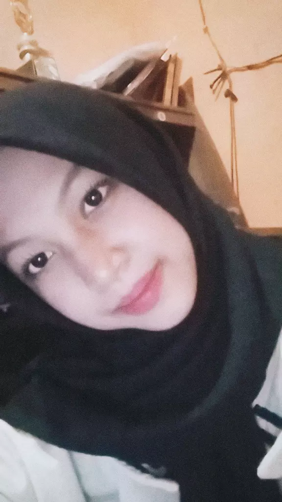

Halo! Selamat datang di portofolio saya. Saya adalah pelajar yang sedang belajar tentang Rekayasa Perangkat Lunak dan tertarik untuk mencoba berbagai hal baru.
English:
Hello! My name is Lintang Larasati.
I am a student of X RPL 3.
I am currently learning programming,
website design, and technology.
I enjoy learning new things and
improving my skills.
Besides studying technology, I also enjoy
cooking and trying to make different kinds
of food and cakes.
Suka mencoba membuat berbagai macam makanan dan kue.
Saya sedang belajar membuat program dan website sederhana.
Suka membuat ide dan mencoba desain yang menarik.
Membuat algoritma dan flowchart sederhana menggunakan Flowgorithm.
Membuat website portofolio sederhana menggunakan HTML dan CSS.
Membuat pot tanaman dari galon bekas sebagai kegiatan pemanfaatan barang bekas.
📱 Instagram:
👩🏻 Pelajar X RPL 3